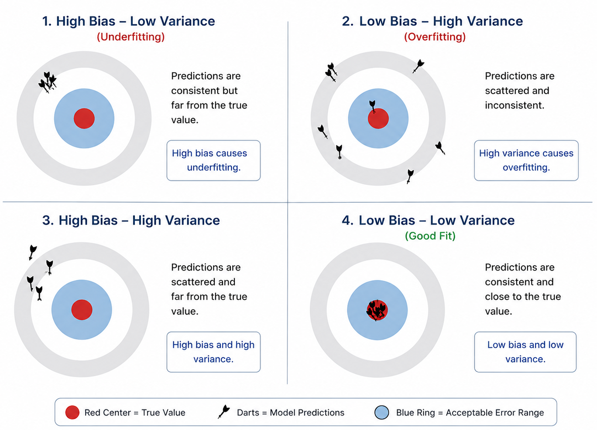
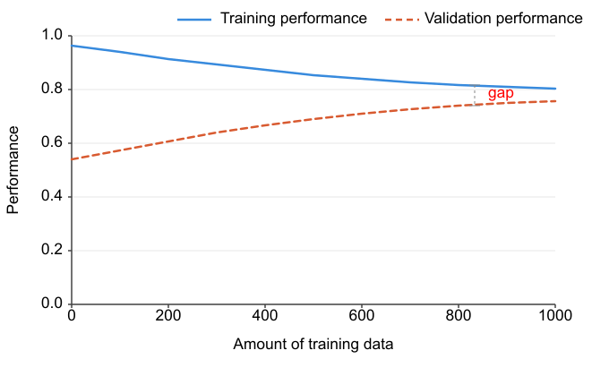
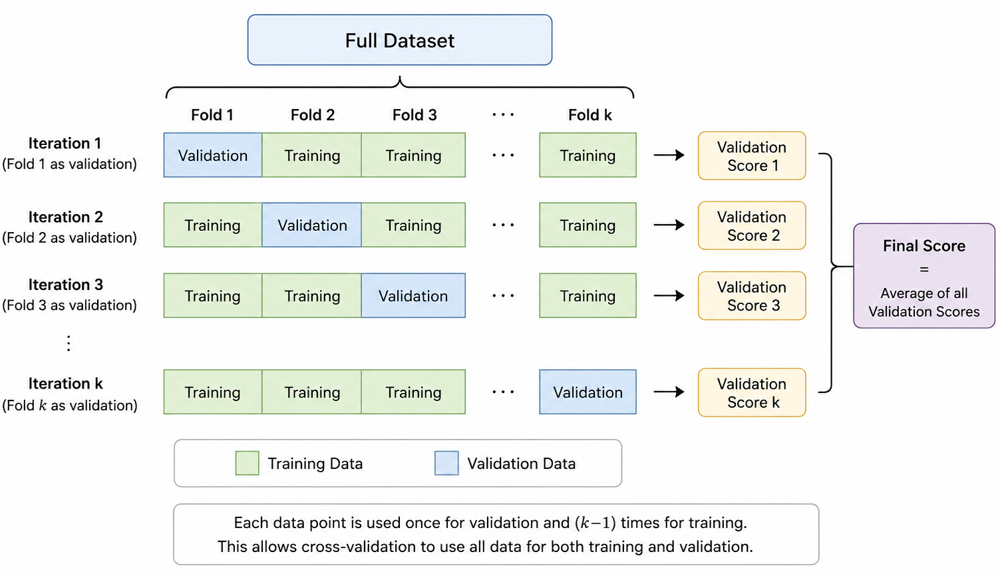

Machine Learning and Deep Learning Fundamentals¶
Welcome to the Course!¶
Before exploring applications in molecular science and materials research, this introductory section is designed to build a strong foundation in the core principles of machine learning. Whether you are revisiting familiar concepts or encountering them for the first time, these fundamentals will prepare you for the more advanced topics covered throughout this course.
Learning Objectives¶
- Explain the fundamental principles of machine learning
- Differentiate among the main types of learning tasks
- Identify and mitigate overfitting and underfitting
- Apply appropriate validation and model evaluation methods
- Describe the basic structure and function of neural networks
- Understand key strategies for model optimization and hyperparameter tuning
1. What Is Machine Learning?¶
Definition¶
Machine learning is a branch of artificial intelligence focused on developing algorithms that learn patterns directly from data. Rather than explicitly programming a computer with a fixed set of rules, we provide examples and allow the model to infer the underlying relationships on its own.
Traditional Programming¶
Machine Learning¶
Why Use Machine Learning in Science?¶
Machine learning has become an essential tool in molecular and materials science because it enables researchers to extract valuable insights from large and complex datasets. By learning directly from data, ML methods can complement traditional theoretical and experimental approaches in several important ways:
- Predict material and molecular properties without relying solely on computationally expensive simulations or laboratory experiments
- Identify hidden relationships and trends within complex scientific data
- Support the design of new molecules and materials by proposing promising candidates and guiding hypothesis generation
- Speed up scientific discovery by dramatically reducing the time required for screening and analysis
- Handle high-dimensional problems that are difficult or impossible to address using conventional techniques
Main Categories of Machine Learning¶
Supervised Learning¶
Supervised learning involves training a model using labeled data, where both the inputs and the corresponding outputs are known. The goal is to learn the relationship between them in order to make predictions on new, unseen data.
Common supervised learning tasks include:
- Regression — predicting continuous numerical quantities, such as binding energies, melting temperatures, or reaction rates
- Classification — assigning data to discrete categories, such as toxic vs. non-toxic compounds or active vs. inactive molecules
Example
""" Example: Predicting molecular solubility using linear regression """
import numpy as np
from sklearn.model_selection import train_test_split
from sklearn.linear_model import LinearRegression
from sklearn.metrics import mean_squared_error
"""
Input features (molecular descriptors)
Columns:
[molecular_weight, polar_surface_area, logP]
"""
X = np.array([
[180.1, 45.2, 1.2],
[250.3, 60.1, 2.5],
[320.5, 75.0, 3.8],
[150.2, 30.5, 0.8],
[275.4, 68.2, 2.9],
[210.0, 50.0, 1.7]
])
""" Experimental solubility values """
y = np.array([12.5, 8.1, 3.2, 15.0, 6.4, 10.2])
"""
Split dataset into training and testing sets
"""
X_train, X_test, y_train, y_test = train_test_split(
X, y, test_size=0.2, random_state=42
)
"""
Create and train the model
"""
model = LinearRegression()
model.fit(X_train, y_train)
"""
Evaluate the model
"""
y_pred = model.predict(X_test)
mse = mean_squared_error(y_test, y_pred)
print("Mean Squared Error:", mse)
"""
Predict solubility for a new molecule
Example molecule:
molecular_weight = 240
polar_surface_area = 55
logP = 2.1
"""
new_molecule = np.array([[240.0, 55.0, 2.1]])
prediction = model.predict(new_molecule)
print("Predicted solubility:", prediction[0])
Unsupervised Learning¶
Unsupervised learning focuses on analyzing data without predefined labels or target values. Instead of learning from known answers, the algorithm explores the data to uncover hidden structures, relationships, and patterns.
Common unsupervised learning techniques include:
- Clustering — organizing molecules or materials into groups based on similarities in their properties or structural features
- Dimensionality reduction — simplifying high-dimensional datasets to enable visualization and interpretation of complex chemical or materials spaces
- Anomaly detection — identifying rare, unusual, or unexpected molecules that differ significantly from the majority of the dataset
Example
""" Example: Clustering molecules by similarity using K-Means """
import numpy as np
from sklearn.cluster import KMeans
import matplotlib.pyplot as plt
"""
Example molecular fingerprints
Each row represents a molecule
Each column represents a simplified molecular feature
"""
molecular_fingerprints = np.array([
[1, 0, 1, 0, 1],
[1, 0, 1, 0, 0],
[0, 1, 0, 1, 1],
[0, 1, 0, 1, 0],
[1, 1, 0, 0, 1],
[1, 1, 0, 0, 0],
[0, 0, 1, 1, 1],
[0, 0, 1, 1, 0]
])
"""
Create the K-Means clustering model
"""
kmeans = KMeans(n_clusters=4, random_state=42)
""" Assign each molecule to a cluster """
clusters = kmeans.fit_predict(molecular_fingerprints)
"""
Display clustering results
"""
for i, cluster_id in enumerate(clusters):
print(f"Molecule {i + 1} belongs to Cluster {cluster_id}")
"""
Visualize clusters using the first two features
"""
plt.figure(figsize=(6, 5))
scatter = plt.scatter(
molecular_fingerprints[:, 0],
molecular_fingerprints[:, 1],
c=clusters,
s=100
)
plt.xlabel("Feature 1")
plt.ylabel("Feature 2")
plt.title("Molecular Clustering with K-Means")
plt.savefig("clustering.png", dpi=300, bbox_inches="tight")
plt.show()
Reinforcement Learning¶
Reinforcement learning is a machine learning approach in which an agent learns to make decisions through interaction with an environment. By receiving rewards or penalties based on its actions, the model gradually discovers strategies that maximize long-term performance.
In molecular and materials science, reinforcement learning can be applied to tasks such as:
- Molecular optimization — designing or modifying molecules to achieve target properties such as improved stability, activity, or solubility
- Synthesis planning — identifying efficient reaction routes and optimal synthetic pathways for chemical compounds
- Experimental design — selecting the most informative experiments to accelerate discovery while minimizing cost and computational effort
Example
# Basic Reinforcement Learning Example for Molecular Optimization
import random
# Example molecules represented by simple properties
# Each molecule has: size, stability, and solubility
molecule_space = [
{"name": "Molecule A", "size": 2, "stability": 5, "solubility": 8},
{"name": "Molecule B", "size": 5, "stability": 7, "solubility": 4},
{"name": "Molecule C", "size": 3, "stability": 9, "solubility": 6},
{"name": "Molecule D", "size": 7, "stability": 4, "solubility": 3},
{"name": "Molecule E", "size": 4, "stability": 8, "solubility": 7},
]
# Reward function: Favor molecules with high stability and solubility
def evaluate_properties(molecule):
reward = (molecule["stability"] + molecule["solubility"])
return reward
# Simple RL agent that selects actions randomly.
# In a real agent, learn() would update a policy or value function.
class RandomAgent:
def select_action(self, state):
# Randomly choose a new molecule from molecular space
return random.choice(molecule_space)
def learn(self, state, action, reward):
# Stub: a real agent would update its policy here using
# the (state, action, reward) transition.
print(
f"Learning from transition:\n"
f" {state['name']} -> {action['name']}\n"
f" Reward = {reward}\n"
)
# Initialize agent and run the reinforcement learning loop.
agent = RandomAgent()
num_episodes = 5
# Reinforcement learning loop
for episode in range(num_episodes):
print(f"\nEpisode {episode + 1}")
# Start from a random molecule
state = random.choice(molecule_space)
done = False
step = 0
while not done:
# agent proposes a new molecule
new_molecule = agent.select_action(state)
# evaluate molecular properties of new molecule
reward = evaluate_properties(new_molecule)
# agent learns from the state, action, or reward
agent.learn(state, new_molecule, reward)
# update current state
state = new_molecule
step += 1
# Stop after a few optimization steps
if step >= 3:
done = True
2. The Machine Learning Workflow¶
Defining the Machine Learning Problem¶
A successful machine learning project begins with a clear and well-structured problem definition. Before selecting algorithms or training models, it is important to establish the scientific objective and determine how success will be evaluated.
The typical workflow includes:
- Identify the objective — determine the property, behavior, or phenomenon you want to predict, classify, or explore.
- Select the appropriate learning task — decide whether the problem is best formulated as regression, classification, clustering, generative modeling, or another ML approach.
- Establish evaluation criteria — define the metrics that will be used to measure model performance and determine whether the model meets the desired objectives.
Example:
“Develop a binary classification model capable of predicting whether a molecule can cross the blood–brain barrier with an accuracy greater than 85%.”
Data Collection and Preparation¶
High-quality data is one of the most important components of any machine learning workflow. The reliability and performance of a model strongly depend on the quality, diversity, and consistency of the training data.
Data Sources¶
Scientific datasets can originate from several different sources, including:
- Experimental measurements obtained from laboratory characterization and testing
- Computational simulations, such as Density Functional Theory (DFT) calculations or Molecular Dynamics (MD) simulations
- Public scientific databases, including resources such as PubChem, ChEMBL, and Materials Project
Data Quality Checks¶
Example
# example: data preparation + feature engineering
import pandas as pd
import numpy as np
# 1. Create a small example dataset
data = pd.DataFrame({
"molecule_name": [
"Ethanol",
"Acetic acid",
"Benzene",
"Acetone",
"Phenol",
"Ethanol", # duplicate row
"Invalid molecule",
"Large outlier"
],
"smiles": [
"CCO",
"CC(=O)O",
"c1ccccc1",
"CC(=O)C",
"c1ccccc1O",
"CCO", # duplicate row
"not_a_smiles", # invalid molecule
"CCCCCCCCCCCCCCCC"
],
"property": [
-0.31,
-0.17,
-2.13,
-0.24,
-1.46,
-0.31, # duplicate value
np.nan, # missing value
50.0 # artificial outlier
]
})
# Save dataset as CSV
data.to_csv("molecular_data.csv", index=False)
# 2. Load data
data = pd.read_csv("molecular_data.csv")
print("Original data:")
print(data)
# 3. Check for missing values
print("\nMissing values:")
print(data.isnull().sum())
# 4. Check for duplicates
print("\nNumber of duplicate rows:")
print(data.duplicated().sum())
# Remove duplicate rows
data = data.drop_duplicates()
# 5. Check distributions
print("\nSummary statistics:")
print(data.describe())
# 6. Remove missing values
data = data.dropna(subset=["smiles", "property"])
# 7. Remove outliers using the 3-sigma rule
z_scores = np.abs(
(data["property"] - data["property"].mean()) / data["property"].std()
)
data_clean = data[z_scores < 3].copy()
print("\nCleaned data:")
print(data_clean)
# 8. Feature engineering with RDKit
from rdkit import Chem
from rdkit.Chem import Descriptors
def calculate_features(smiles):
"""
Convert a molecule represented by a SMILES string
into numerical molecular descriptors.
"""
mol = Chem.MolFromSmiles(smiles)
# Handle invalid molecules
if mol is None:
return None
features = {
"molecular_weight": Descriptors.MolWt(mol),
"logP": Descriptors.MolLogP(mol),
"num_h_donors": Descriptors.NumHDonors(mol),
"num_h_acceptors": Descriptors.NumHAcceptors(mol),
"tpsa": Descriptors.TPSA(mol),
"num_rotatable_bonds": Descriptors.NumRotatableBonds(mol),
"num_aromatic_rings": Descriptors.NumAromaticRings(mol)
}
return features
# 9. Apply feature engineering to each molecule
feature_rows = []
for _, row in data_clean.iterrows():
features = calculate_features(row["smiles"])
if features is not None:
features["molecule_name"] = row["molecule_name"]
features["smiles"] = row["smiles"]
features["property"] = row["property"]
feature_rows.append(features)
features_df = pd.DataFrame(feature_rows)
# Reorder columns
features_df = features_df[
[
"molecule_name",
"smiles",
"molecular_weight",
"logP",
"num_h_donors",
"num_h_acceptors",
"tpsa",
"num_rotatable_bonds",
"num_aromatic_rings",
"property"
]
]
print("\nFinal feature table:")
print(features_df)
# 10. Save final processed dataset
features_df.to_csv("molecular_features.csv", index=False)
print("\nProcessed dataset saved as molecular_features.csv")
pandas is a widely used Python library for data analysis and manipulation. It provides powerful tools for working with structured data such as tables and spreadsheets through objects called DataFrames. In machine learning and scientific computing, pandas is commonly used to load datasets, clean missing values, filter rows, compute statistics, and organize data before training models.
RDKit is an open-source cheminformatics library designed for working with molecular and chemical data. It allows researchers to represent molecules computationally, calculate molecular descriptors and fingerprints, visualize chemical structures, and perform tasks such as similarity analysis and feature engineering for machine learning applications in chemistry, drug discovery, and materials science.
Training, Validation, and Test Sets¶
A fundamental principle in machine learning is that models must be evaluated on data they have never seen before.
Critical principle: Never test a model using the same data used for training.
If the model is evaluated on training data, it may memorize examples instead of learning general patterns, leading to overfitting and poor performance on new data. To avoid this problem, datasets are usually divided into three parts:
Training Set¶
The training set is used to teach the model and learn patterns from the data.
Validation Set¶
The validation set is used during development to tune hyperparameters, compare models, and monitor overfitting.
Test Set¶
The test set is used only for the final evaluation of the model on unseen data.
Typical Dataset Split¶
| Dataset | Typical Fraction |
|---|---|
| Training Set | 70% |
| Validation Set | 15% |
| Test Set | 15% |
Conceptual Workflow¶
Example
# Basic example: training, validation, and test split
import numpy as np
from sklearn.model_selection import train_test_split
# 1. Create a small example dataset
# X = input features
# y = target values
X = np.array([
[1.0, 2.0],
[2.0, 1.5],
[3.0, 3.5],
[4.0, 4.5],
[5.0, 5.5],
[6.0, 6.5],
[7.0, 7.5],
[8.0, 8.5],
[9.0, 9.5],
[10.0, 10.5]
])
y = np.array([1, 1, 2, 2, 3, 3, 4, 4, 5, 5])
# 2. First split: training set and temporary set
X_train, X_temp, y_train, y_temp = train_test_split(
X,
y,
test_size=0.30,
random_state=42
)
# 3. Second split: validation set and test set
X_val, X_test, y_val, y_test = train_test_split(
X_temp,
y_temp,
test_size=0.50,
random_state=42
)
# 4. Print the results
print("Training set:")
print("X_train:")
print(X_train)
print("y_train:")
print(y_train)
print("\nValidation set:")
print("X_val:")
print(X_val)
print("y_val:")
print(y_val)
print("\nTest set:")
print("X_test:")
print(X_test)
print("y_test:")
print(y_test)
# 5. Print the sizes
print("\nDataset sizes:")
print("Training set size:", len(X_train))
print("Validation set size:", len(X_val))
print("Test set size:", len(X_test))
Scaffold-Based Splitting¶
In molecular machine learning, scaffold-based splitting divides datasets according to the core structural framework of molecules rather than randomly assigning individual samples to splits.
A molecular scaffold is the central skeleton of a molecule — typically its ring systems and the bonds connecting them (stripped of peripheral substituents). Molecules that share a scaffold are structurally similar and tend to have similar properties. This is precisely what makes random splitting problematic: if two molecules share a scaffold, a random split may place both in the training and test sets, allowing the model to effectively memorize structural patterns rather than learning to generalize. The result is overly optimistic performance estimates that do not reflect how the model would perform on genuinely novel chemical structures.
Scaffold-based splitting addresses this by grouping all molecules that share a scaffold into the same subset. The test set therefore contains scaffolds the model has never seen during training, providing a more realistic evaluation of generalization.
Conceptual Example¶
Random Split:
Train → Ibuprofen (isobutylbenzene scaffold)
Test → Ketoprofen (isobutylbenzene scaffold)
Both molecules share the same core scaffold:
the model has implicitly seen the test scaffold during training.
Scaffold Split:
Train → Ibuprofen (isobutylbenzene scaffold)
Test → Penicillin (thiazolidine-fused beta-lactam scaffold)
The test scaffold is structurally distinct from anything
seen during training, giving a more honest evaluation.
This strategy is widely used in molecular property prediction, drug discovery, and materials science to evaluate how well a model generalizes to new regions of chemical space.
Example
# example: scaffold-based train/test split
import numpy as np
from rdkit import Chem
from rdkit.Chem.Scaffolds import MurckoScaffold
from sklearn.model_selection import GroupShuffleSplit
# 1. Example molecules (SMILES strings)
molecules = [
"CCO", # Ethanol
"CCCO", # Propanol
"c1ccccc1", # Benzene
"c1ccccc1O", # Phenol
"CC(=O)O", # Acetic acid
"CC(=O)OC1=CC=CC=C1C(=O)O", # Aspirin
"CCN(CC)CC", # Triethylamine
"c1ccncc1" # Pyridine
]
# Example target property (e.g., solubility or biological activity)
y = np.array([1.2, 1.5, 0.3, 0.4, 2.1, 0.8, 1.7, 0.5])
# 2. Generate simple numerical features from each molecule
X = []
for smiles in molecules:
mol = Chem.MolFromSmiles(smiles)
features = [
mol.GetNumAtoms(),
mol.GetNumBonds(),
mol.GetRingInfo().NumRings()
]
X.append(features)
X = np.array(X)
# 3. Define scaffold extraction function
def get_scaffold(smiles):
mol = Chem.MolFromSmiles(smiles)
scaffold = MurckoScaffold.MurckoScaffoldSmiles(mol=mol)
return scaffold
# 4. Compute molecular scaffolds
scaffolds = [get_scaffold(smiles) for smiles in molecules]
print("Molecular scaffolds:\n")
for mol, scaffold in zip(molecules, scaffolds):
print(f"{mol:35s} -> {scaffold}")
# 5. Perform scaffold-based split
splitter = GroupShuffleSplit(
n_splits=1,
test_size=0.2,
random_state=42
)
train_idx, test_idx = next( splitter.split(X, y, groups=scaffolds) )
# 6. Create training and test sets
X_train, X_test = X[train_idx], X[test_idx]
y_train, y_test = y[train_idx], y[test_idx]
train_molecules = [molecules[i] for i in train_idx]
test_molecules = [molecules[i] for i in test_idx]
# 7. Display results
print("\nTraining molecules:")
for mol in train_molecules:
print(mol)
print("\nTest molecules:")
for mol in test_molecules:
print(mol)
# 8. Dataset sizes
print("\nDataset sizes:")
print("Training set size:", len(X_train))
print("Test set size:", len(X_test))
3. Overfitting and Underfitting¶
The Bias-Variance Tradeoff¶
Underfitting (High Bias):
- The model is too simple to adequately represent the complexity of the data
- Performs poorly on both the training set and unseen test data
- Fails to capture important relationships and underlying patterns
- Often occurs when the model has insufficient capacity or too few features
Overfitting (High Variance):
- The model is excessively complex relative to the amount of available data
- Achieves very high accuracy on the training data but performs poorly on new data
- Learns random fluctuations and noise instead of generalizable patterns
- Typically results in poor predictive performance on unseen examples
Optimal Balance (Sweet Spot):
- The model has an appropriate level of complexity for the problem
- Performs well on both training and test datasets
- Captures meaningful patterns while avoiding memorization of noise
- Generalizes effectively to new and unseen data points

Example
# Underfitting vs Good Fit vs Overfitting
import numpy as np
import matplotlib.pyplot as plt
# reproducibility
np.random.seed(42)
# 1. Generate synthetic dataset
# Input variable
X = np.linspace(0, 10, 50)
# True underlying relationship. Quadratic function + random noise
y = 0.5 * X**2 - 2 * X + 3 + np.random.normal(0, 4, 50)
# 2. Train polynomial models
# Underfitting model: Degree 1 polynomial (linear model)
underfit_model = np.poly1d( np.polyfit(X, y, 1) )
# Good fit model: Degree 2 polynomial (matches true relationship)
good_model = np.poly1d( np.polyfit(X, y, 2) )
# Overfitting model: Very high-degree polynomial
overfit_model = np.poly1d( np.polyfit(X, y, 15) )
# 3. Create smooth plotting grid
X_plot = np.linspace(0, 10, 500)
# 4. Visualize results
plt.figure(figsize=(10, 6))
# Original data points
plt.scatter(X, y, alpha=0.7, label="Training Data")
# Underfitting curve
plt.plot(
X_plot,
underfit_model(X_plot),
linestyle="--",
linewidth=2,
label="Underfitting (Degree 1)"
)
# Good fit curve
plt.plot(
X_plot,
good_model(X_plot),
linewidth=2,
label="Good Fit (Degree 2)"
)
# Overfitting curve
plt.plot(
X_plot,
overfit_model(X_plot),
linestyle=":",
linewidth=2,
label="Overfitting (Degree 15)"
)
# 5. Labels and formatting
plt.xlabel("Input Feature")
plt.ylabel("Target Value")
plt.title("Underfitting vs Good Fit vs Overfitting")
plt.legend()
plt.grid(True)
plt.savefig("underfitting-overfitting.png", dpi=300, bbox_inches="tight")
plt.show()
Detecting Overfitting¶
A common way to detect overfitting is by analyzing learning curves, which show model performance on the training and validation sets as the amount of training data increases.
Typically, two curves are monitored:
- Training performance
- Validation performance

Interpreting Learning Curves¶
Overfitting¶
Overfitting occurs when a model achieves very high performance on the training set but much lower performance on the validation set. The result is a large gap between the two curves. Rather than learning general patterns, the model memorizes the training data and fails to generalize to new examples.
Underfitting¶
Underfitting occurs when a model performs poorly on both the training and validation sets. The two curves remain close together but at a low level of performance, indicating that the model is too simple to capture the underlying relationships in the data.
Good generalization¶
A well-fitted model achieves strong performance on both the training and validation sets, with only a small gap between the two curves. This small gap indicates that the model has learned general patterns rather than memorizing the training data, and is therefore able to generalize well to unseen examples.
Overfitting:
Training accuracy → Very high
Validation accuracy → Much lower
Underfitting:
Training accuracy → Low
Validation accuracy → Low
Good fit:
Training accuracy → High
Validation accuracy → Similar and stable
Example
# example: Learning curves
import numpy as np
import matplotlib.pyplot as plt
from sklearn.datasets import make_regression
from sklearn.model_selection import learning_curve
from sklearn.preprocessing import PolynomialFeatures
from sklearn.pipeline import make_pipeline
from sklearn.linear_model import LinearRegression
# 1. Generate example regression data
np.random.seed(42)
X = np.linspace(0, 10, 100).reshape(-1, 1)
y = (
0.5 * X[:, 0]**2
- 2 * X[:, 0]
+ 3
+ np.random.normal(0, 4, 100)
)
# 2. Define model
# High-degree polynomial model
# This model is intentionally complex
model = make_pipeline(
PolynomialFeatures(degree=10),
LinearRegression()
)
# 3. Compute learning curves
train_sizes, train_scores, val_scores = learning_curve(
model,
X,
y,
train_sizes=np.linspace(0.1, 1.0, 10),
cv=5,
scoring="neg_mean_squared_error"
)
# Convert negative MSE to positive MSE
train_errors = -train_scores.mean(axis=1)
val_errors = -val_scores.mean(axis=1)
# 4. Plot learning curves
plt.figure(figsize=(10, 6))
plt.plot(
train_sizes,
train_errors,
marker="o",
label="Training Error"
)
plt.plot(
train_sizes,
val_errors,
marker="o",
label="Validation Error"
)
plt.xlabel("Training Set Size")
plt.ylabel("Mean Squared Error")
plt.title("Learning Curves")
plt.legend()
plt.grid(True)
plt.savefig("learning-curves.png", dpi=300, bbox_inches="tight")
plt.show()
# 5. Print values
print("Training set sizes:", train_sizes)
print("Training errors:", train_errors)
print("Validation errors:", val_errors)
Preventing Overfitting¶
1. Get More Data¶
The most effective solution when possible:
# Data augmentation for molecules
def augment_molecule(smiles):
mol = Chem.MolFromSmiles(smiles)
# Generate different SMILES representations
augmented = []
for _ in range(5):
random_smiles = Chem.MolToSmiles(mol, doRandom=True)
augmented.append(random_smiles)
return augmented
2. Regularization¶
Add penalty for model complexity:
L1 Regularization (Lasso): Encourages sparsity by penalizing the absolute values of model parameters, causing some coefficients to become exactly zero and effectively performing feature selection.
Where:
- \(\text{Loss}(\mathbf{w})\) is the original loss function
- \(w_i\) are the model parameters
- \(\lambda\) controls the strength of the regularization penalty
from sklearn.linear_model import Lasso
model = Lasso(alpha=0.1) # alpha controls regularization strength
model.fit(X_train, y_train)
L2 Regularization (Ridge): Penalizes large model parameters by adding the squared magnitude of the weights to the loss function. This helps reduce model complexity and improves generalization.
Where:
- \(\text{Loss}(\mathbf{w})\) is the original loss function
- \(w_i\) are the model parameters
- \(\lambda\) controls the strength of the regularization penalty
Elastic Net: Combines both L1 and L2 regularization, encouraging sparsity while also penalizing large model parameters.
Where:
- \(\text{Loss}(\mathbf{w})\) is the original loss function
- \(w_i\) are the model parameters
- \(\lambda_1\) controls the strength of the L1 penalty
- \(\lambda_2\) controls the strength of the L2 penalty
from sklearn.linear_model import ElasticNet
model = ElasticNet(alpha=0.1, l1_ratio=0.5)
model.fit(X_train, y_train)
3. Cross-Validation¶
Cross-validation is a widely used technique for evaluating machine learning models more reliably, especially when the available dataset is limited. Instead of performing a single train-test split, the data is divided into multiple subsets, allowing the model to be trained and validated several times on different portions of the dataset.
In a typical cross-validation workflow, one subset is temporarily used for validation while the remaining subsets are used for training. This process is repeated multiple times so that every data point is eventually used for both training and validation. Cross-validation provides a more robust estimate of model performance and helps reduce the risk of overfitting or biased evaluations caused by a single random split.
4. Feature Selection¶
Feature selection is the process of identifying and retaining the most informative variables in a dataset while removing irrelevant or redundant features. Reducing the number of features can improve model performance, decrease computational cost, and help reduce overfitting. In scientific machine learning applications, feature selection is especially important when working with high-dimensional molecular or materials datasets containing many correlated descriptors.
Example
# example: Feature selection with SelectKBest
import pandas as pd
import numpy as np
from sklearn.datasets import make_regression
from sklearn.model_selection import train_test_split
from sklearn.feature_selection import SelectKBest, f_regression
# 1. Generate synthetic regression dataset
X, y = make_regression(
n_samples=100,
n_features=20,
n_informative=8,
noise=10,
random_state=42
)
# 2. Create DataFrame with feature names
feature_names = [f"feature_{i}" for i in range(20)]
X = pd.DataFrame(X, columns=feature_names)
# 3. Split dataset into training and testing sets
X_train, X_test, y_train, y_test = train_test_split(
X,
y,
test_size=0.2,
random_state=42
)
# 4. Select the top 10 features
selector = SelectKBest(
score_func=f_regression,
k=10
)
X_train_selected = selector.fit_transform(
X_train,
y_train
)
X_test_selected = selector.transform(X_test)
# 5. Get selected feature names
selected_features = X.columns[
selector.get_support()
]
print("Selected features:")
print(selected_features.tolist())
# 6. Display transformed dataset shapes
print("\nOriginal training shape:", X_train.shape)
print("Reduced training shape:", X_train_selected.shape)
print("\nOriginal test shape:", X_test.shape)
print("Reduced test shape:", X_test_selected.shape)
5. Early Stopping (for Neural Networks)¶
Early stopping is a regularization technique used to reduce overfitting during neural network training. As training progresses, the model usually improves on the training data, but after a certain point its performance on validation data may begin to deteriorate. Early stopping monitors validation performance and automatically stops training when no improvement is observed for a specified number of iterations. This helps the model retain good generalization while avoiding unnecessary training.
6. Dropout (for Neural Networks)¶
Dropout is a regularization technique used in neural networks to reduce overfitting and improve generalization. During training, a fraction of neurons is randomly deactivated at each iteration, preventing the network from relying too heavily on specific connections. This encourages the model to learn more robust and distributed representations of the data. During evaluation and prediction, all neurons are used normally.
Addressing Underfitting¶
- Use a more complex model: Add more features, use deeper networks
- Remove regularization: Reduce alpha/lambda values
- Engineer better features: Domain knowledge can help
- Train longer: Increase number of epochs/iterations
- Check for errors: Ensure data is preprocessed correctly
4. Cross-Validation¶
Why Cross-Validation?¶
Cross-validation is a model evaluation technique designed to provide a more reliable estimate of model performance. Instead of relying on a single train-test split, the model is trained and evaluated multiple times using different subsets of the data. This approach makes better use of limited datasets, reduces dependence on a particular split, and helps identify problems such as overfitting and poor generalization.
K-Fold Cross-Validation¶
In K-fold cross-validation, the dataset is divided into (K) equally sized subsets, called folds. The model is trained using (K-1) folds and evaluated on the remaining fold. This process is repeated (K) times so that each fold serves as the test set once. The final performance is computed as the average across all folds, providing a more stable estimate of model accuracy.

Example
# example: Cross-validation with scikit-learn
import numpy as np
from sklearn.datasets import make_regression
from sklearn.linear_model import LinearRegression
from sklearn.model_selection import cross_val_score
# ---------------------------------------------------
# 1. Generate example regression dataset
# ---------------------------------------------------
X, y = make_regression(
n_samples=100,
n_features=3,
noise=15,
random_state=42
)
# ---------------------------------------------------
# 2. Define machine learning model
# ---------------------------------------------------
model = LinearRegression()
# ---------------------------------------------------
# 3. Perform 5-fold cross-validation
# ---------------------------------------------------
scores = cross_val_score(
model,
X,
y,
cv=5,
scoring="r2"
)
# ---------------------------------------------------
# 4. Display results
# ---------------------------------------------------
print("R² score for each fold:")
print(scores)
print("\nAverage cross-validation performance:")
print(f"Cross-validation R²: {scores.mean():.3f} ± {scores.std():.3f}")
The code:
- generates a synthetic regression dataset,
- trains a linear regression model,
- evaluates it using 5-fold cross-validation,
- and reports the mean and standard deviation of the (R^2) score across all folds.
Stratified K-Fold¶
Stratified K-fold cross-validation is commonly used for classification problems where class imbalance exists. In this approach, each fold preserves approximately the same class distribution as the original dataset. This ensures that all classes are represented consistently during training and validation, leading to more reliable performance estimates.
Leave-One-Out Cross-Validation (LOOCV)¶
Leave-One-Out Cross-Validation is an extreme case of K-fold cross-validation in which each fold contains only a single sample. The model is trained on all remaining data points and tested on the one excluded sample. This process is repeated for every sample in the dataset. LOOCV uses data very efficiently but can become computationally expensive for large datasets.
Time Series Cross-Validation¶
Time series cross-validation is specifically designed for temporal or sequential data. Unlike random splitting methods, it preserves the chronological order of observations to avoid using future information during training. The model is trained on past data and evaluated on later time periods, providing a more realistic assessment of predictive performance in forecasting tasks.
5. Model Evaluation Metrics¶
Regression Metrics¶
Regression metrics are used to evaluate how accurately a model predicts continuous numerical values. Different metrics emphasize different aspects of prediction quality, such as average error magnitude, sensitivity to large errors, or the proportion of variance explained by the model. Choosing appropriate evaluation metrics is essential for understanding model performance and comparing different approaches.
Mean Absolute Error (MAE)¶
Mean Absolute Error (MAE) measures the average absolute difference between predicted values and the true target values. Because it uses absolute differences, MAE is easy to interpret and provides a direct estimate of the average prediction error in the same units as the target variable. It is less sensitive to large outliers than squared-error metrics.
Where:
- \(y_i\) are the true values
- \(\hat{y}_i\) are the predicted values
- \(n\) is the number of samples
from sklearn.metrics import mean_absolute_error
mae = mean_absolute_error(y_true, y_pred)
print(f"MAE: {mae:.3f}")
# Interpretation: Average prediction error in original units
# Lower is better
# Robust to outliers
Mean Squared Error (MSE) and Root Mean Squared Error (RMSE)¶
Mean Squared Error (MSE) measures the average squared difference between predictions and true values. Squaring the errors penalizes large mistakes more strongly, making MSE sensitive to outliers. Root Mean Squared Error (RMSE) is the square root of MSE and expresses the error in the same units as the target variable, making interpretation more intuitive.
Where:
- \(y_i\) are the true values
- \(\hat{y}_i\) are the predicted values
- \(n\) is the number of samples
from sklearn.metrics import mean_squared_error
mse = mean_squared_error(y_true, y_pred)
rmse = np.sqrt(mse)
print(f"MSE: {mse:.3f}")
print(f"RMSE: {rmse:.3f}")
# Interpretation: Penalizes large errors more than MAE
# RMSE in same units as target variable
# Lower is better
R² (Coefficient of Determination)¶
The (\(R^2\)) score measures how well a regression model explains the variability of the target data. An (\(R^2\)) value of 1 indicates perfect predictions, while a value close to 0 indicates poor predictive performance. Negative values are also possible and suggest that the model performs worse than simply predicting the mean of the dataset.
Where:
- \(y_i\) are the true values
- \(\hat{y}_i\) are the predicted values
- \(\bar{y}\) is the mean of the true values
from sklearn.metrics import r2_score
r2 = r2_score(y_true, y_pred)
print(f"R²: {r2:.3f}")
# Interpretation:
# R² = 1: Perfect predictions
# R² = 0: As good as predicting mean
# R² < 0: Worse than predicting mean
# Range: ($-\infty$, 1]
Visualization¶
Visualization is an important part of regression model evaluation because it helps identify trends, systematic errors, and outliers that may not be obvious from numerical metrics alone. Common visualizations include predicted vs. true value plots, residual plots, and learning curves, which provide insight into model accuracy and generalization behavior. Matplotlib is a standard Python package for plotting graphs.
import matplotlib.pyplot as plt
plt.figure(figsize=(8, 8))
plt.scatter(y_true, y_pred, alpha=0.5)
plt.plot([y_true.min(), y_true.max()],
[y_true.min(), y_true.max()],
'r--', linewidth=2, label='Perfect Prediction')
plt.xlabel('True Values')
plt.ylabel('Predicted Values')
plt.title(f'R² = {r2:.3f}, RMSE = {rmse:.3f}')
plt.legend()
plt.axis('equal')
plt.show()
Classification Metrics¶
Classification metrics are used to evaluate models that predict discrete categories or classes. Different metrics emphasize different aspects of model performance, such as overall correctness, the ability to detect positive cases, or robustness to class imbalance. Selecting appropriate metrics is especially important in scientific and medical applications where false positives and false negatives may have very different consequences.
Confusion Matrix¶
A confusion matrix summarizes the predictions of a classification model by comparing predicted labels with the true labels. It provides counts of correctly and incorrectly classified samples and serves as the basis for many classification metrics. For binary classification:
| Predicted Positive | Predicted Negative | |
|---|---|---|
| Actual Positive | True Positive (TP) | False Negative (FN) |
| Actual Negative | False Positive (FP) | True Negative (TN) |
The confusion matrix helps identify the types of errors made by the model, such as missed positive cases or false alarms.
from sklearn.metrics import confusion_matrix, ConfusionMatrixDisplay
cm = confusion_matrix(y_true, y_pred)
disp = ConfusionMatrixDisplay(confusion_matrix=cm, display_labels=['Inactive', 'Active'])
disp.plot()
plt.show()
# Predicted
# Negative Positive
# Actual Neg TN FP
# Pos FN TP
Accuracy, Precision, Recall, F1-Score¶
Accuracy measures the fraction of correctly classified samples:
Precision measures how many predicted positive cases are actually correct:
Recall, also called sensitivity, measures the fraction of actual positive cases that the model correctly identifies:
The F1-score combines precision and recall into a single metric using their harmonic mean:
The F1-score is particularly useful when classes are imbalanced or when both false positives and false negatives carry significant cost.
from sklearn.metrics import accuracy_score, precision_score, recall_score, f1_score
accuracy = accuracy_score(y_true, y_pred)
precision = precision_score(y_true, y_pred)
recall = recall_score(y_true, y_pred)
f1 = f1_score(y_true, y_pred)
print(f"Accuracy: {accuracy:.3f} - (TP + TN) / Total")
print(f"Precision: {precision:.3f} - TP / (TP + FP) - How many predicted positives are correct?")
print(f"Recall: {recall:.3f} - TP / (TP + FN) - How many actual positives did we find?")
print(f"F1-Score: {f1:.3f} - Harmonic mean of precision and recall")
ROC Curve and AUC¶
The Receiver Operating Characteristic (ROC) curve evaluates classification performance across different decision thresholds by plotting:
- True Positive Rate (TPR)
- False Positive Rate (FPR)
The True Positive Rate is:
The False Positive Rate is:
The Area Under the Curve (AUC) summarizes the ROC curve into a single value. An AUC close to 1 indicates excellent classification performance, while an AUC near 0.5 suggests random guessing.
Example
# example: ROC curve and AUC
import numpy as np
import matplotlib.pyplot as plt
from sklearn.datasets import make_classification
from sklearn.model_selection import train_test_split
from sklearn.linear_model import LogisticRegression
from sklearn.metrics import (
roc_curve,
roc_auc_score
)
# 1. Generate example classification dataset
X, y = make_classification(
n_samples=1000,
n_features=10,
n_informative=5,
n_redundant=2,
random_state=42
)
# 2. Split dataset into training and test sets
X_train, X_test, y_train, y_test = train_test_split(
X,
y,
test_size=0.2,
random_state=42
)
# 3. Train classification model
model = LogisticRegression()
model.fit(X_train, y_train)
# 4. Get probability predictions
# Probability of belonging to class 1
y_prob = model.predict_proba(X_test)[:, 1]
# 5. Calculate ROC curve and AUC
fpr, tpr, thresholds = roc_curve(
y_test,
y_prob
)
auc = roc_auc_score(
y_test,
y_prob
)
print(f"AUC score: {auc:.3f}")
# 6. Plot ROC curve
plt.figure(figsize=(8, 6))
plt.plot(
fpr,
tpr,
linewidth=2,
label=f"ROC Curve (AUC = {auc:.3f})"
)
# Random classifier reference line
plt.plot(
[0, 1],
[0, 1],
"k--",
label="Random Classifier"
)
plt.xlabel("False Positive Rate")
plt.ylabel("True Positive Rate")
plt.title("Receiver Operating Characteristic (ROC) Curve")
plt.legend()
plt.grid(True)
plt.savefig("roc-curve.png", dpi=300, bbox_inches="tight")
plt.show()
# 7. AUC interpretation
print("\nAUC Interpretation:")
print("1.0 -> Perfect classifier")
print("0.5 -> Random guessing")
print("<0.5 -> Worse than random")
Precision-Recall Curve¶
The Precision-Recall (PR) curve plots precision against recall for different classification thresholds. Unlike ROC curves, PR curves focus specifically on the positive class and are often more informative for highly imbalanced datasets where positive examples are rare.
PR curves are widely used in applications such as:
- medical diagnosis,
- fraud detection,
- molecular activity prediction,
- and anomaly detection.
Example
# example: Precision-Recall curve
import numpy as np
import matplotlib.pyplot as plt
from sklearn.datasets import make_classification
from sklearn.model_selection import train_test_split
from sklearn.linear_model import LogisticRegression
from sklearn.metrics import (
precision_recall_curve,
average_precision_score
)
# 1. Generate example classification dataset
# Imbalanced dataset
X, y = make_classification(
n_samples=1000,
n_features=10,
n_informative=5,
n_redundant=2,
weights=[0.9, 0.1], # 90% class 0, 10% class 1
random_state=42
)
# 2. Split dataset into training and test sets
X_train, X_test, y_train, y_test = train_test_split(
X,
y,
test_size=0.2,
random_state=42
)
# 3. Train classification model
model = LogisticRegression()
model.fit(X_train, y_train)
# 4. Get probability predictions
# Probability of belonging to class 1
y_prob = model.predict_proba(X_test)[:, 1]
# 5. Compute Precision-Recall curve
precision, recall, thresholds = precision_recall_curve(
y_test,
y_prob
)
# Average Precision (AP)
ap = average_precision_score(
y_test,
y_prob
)
print(f"Average Precision (AP): {ap:.3f}")
# 6. Plot Precision-Recall curve
plt.figure(figsize=(8, 6))
plt.plot(
recall,
precision,
linewidth=2,
label=f"PR Curve (AP = {ap:.3f})"
)
plt.xlabel("Recall")
plt.ylabel("Precision")
plt.title("Precision-Recall Curve")
plt.legend()
plt.grid(True)
plt.savefig("pr-curve.png", dpi=300, bbox_inches="tight")
plt.show()
# 7. Interpretation
print("\nInterpretation:")
print("- High precision means few false positives")
print("- High recall means few false negatives")
print("- Precision-Recall curves are especially useful")
print(" for imbalanced datasets")
Choosing the Right Metric¶
For Regression: - MAE: Easy to interpret, robust to outliers - RMSE: Penalizes large errors - R²: Normalized, easy to compare across datasets
For Classification: - Balanced classes: Accuracy, F1-score - Imbalanced classes: Precision, Recall, AUC, Average Precision - Cost-sensitive: Define custom metric based on FP/FN costs
For Molecular Applications: - Drug discovery: Prioritize recall (find all active compounds) - Toxicity prediction: Prioritize precision (avoid false negatives) - Property prediction: RMSE or MAE depending on outlier sensitivity
6. Hyperparameter Tuning¶
What are Hyperparameters?¶
Parameters set before training (not learned from data): - Learning rate - Number of layers/neurons - Regularization strength - Number of trees in random forest - Kernel parameters in SVM
Grid Search¶
Try all combinations in a grid:
from sklearn.model_selection import GridSearchCV
from sklearn.ensemble import RandomForestRegressor
# Define parameter grid
param_grid = {
'n_estimators': [100, 200, 500],
'max_depth': [10, 20, 30, None],
'min_samples_split': [2, 5, 10],
'min_samples_leaf': [1, 2, 4]
}
# Grid search with cross-validation
grid_search = GridSearchCV(
RandomForestRegressor(random_state=42),
param_grid,
cv=5,
scoring='r2',
n_jobs=-1, # Use all CPUs
verbose=2
)
grid_search.fit(X_train, y_train)
print(f"Best parameters: {grid_search.best_params_}")
print(f"Best CV score: {grid_search.best_score_:.3f}")
# Use best model
best_model = grid_search.best_estimator_
Random Search¶
Sample random combinations (more efficient):
from sklearn.model_selection import RandomizedSearchCV
from scipy.stats import randint, uniform
# Define parameter distributions
param_distributions = {
'n_estimators': randint(100, 1000),
'max_depth': randint(10, 50),
'min_samples_split': randint(2, 20),
'min_samples_leaf': randint(1, 10),
'max_features': uniform(0.1, 0.9)
}
random_search = RandomizedSearchCV(
RandomForestRegressor(random_state=42),
param_distributions,
n_iter=50, # Number of random combinations to try
cv=5,
scoring='r2',
n_jobs=-1,
random_state=42,
verbose=2
)
random_search.fit(X_train, y_train)
print(f"Best parameters: {random_search.best_params_}")
print(f"Best CV score: {random_search.best_score_:.3f}")
Bayesian Optimization¶
Intelligent search using previous results:
from skopt import BayesSearchCV
from skopt.space import Real, Integer
# Define search space
search_spaces = {
'n_estimators': Integer(100, 1000),
'max_depth': Integer(10, 50),
'min_samples_split': Integer(2, 20),
'min_samples_leaf': Integer(1, 10),
'max_features': Real(0.1, 1.0)
}
bayes_search = BayesSearchCV(
RandomForestRegressor(random_state=42),
search_spaces,
n_iter=50,
cv=5,
scoring='r2',
n_jobs=-1,
random_state=42
)
bayes_search.fit(X_train, y_train)
print(f"Best parameters: {bayes_search.best_params_}")
print(f"Best CV score: {bayes_search.best_score_:.3f}")
7. Neural Networks Basics¶
Neural networks are machine learning models inspired by the structure of the human brain and are composed of interconnected computational units called neurons, or perceptrons. A neural network is typically organized into layers, including an input layer, one or more hidden layers, and an output layer. Each neuron processes information by applying weights and activation functions, such as ReLU, sigmoid, or tanh, which introduce nonlinearity and allow the network to learn complex relationships in the data. During training, the model minimizes a loss function that measures prediction error, such as Mean Squared Error (MSE) for regression problems or cross-entropy loss for classification tasks. The optimization process is usually performed using gradient descent and advanced optimizers like Adam or RMSprop, which iteratively update model parameters to improve performance. Training is commonly performed in batches of data rather than using the entire dataset at once, improving computational efficiency and stability. In many applications, learning rate scheduling is also used to gradually adjust the learning rate during training, helping the model converge more effectively and avoid unstable updates.
8. Common Pitfalls and Best Practices¶
Data Leakage¶
Problem: Information from test set influences training
Common mistakes:
# WRONG: Standardize before splitting
from sklearn.preprocessing import StandardScaler
scaler = StandardScaler()
X_scaled = scaler.fit_transform(X) # Uses info from entire dataset!
X_train, X_test, y_train, y_test = train_test_split(X_scaled, y)
# CORRECT: Fit on training, transform both
X_train, X_test, y_train, y_test = train_test_split(X, y)
scaler = StandardScaler()
X_train_scaled = scaler.fit_transform(X_train) # Fit only on training
X_test_scaled = scaler.transform(X_test) # Transform using training stats
# WRONG: Feature selection on entire dataset
selector = SelectKBest(k=10)
X_selected = selector.fit_transform(X, y) # Leakage!
X_train, X_test = train_test_split(X_selected)
# CORRECT: Feature selection in each CV fold
from sklearn.pipeline import Pipeline
pipeline = Pipeline([
('scaler', StandardScaler()),
('selector', SelectKBest(k=10)),
('model', RandomForestRegressor())
])
scores = cross_val_score(pipeline, X, y, cv=5)
Not Using Validation Set¶
Problem: Tuning hyperparameters on test set
# WRONG: Tune on test set
best_accuracy = 0
best_params = None
for params in parameter_grid:
model.set_params(**params)
model.fit(X_train, y_train)
accuracy = model.score(X_test, y_test) # Leakage!
if accuracy > best_accuracy:
best_accuracy = accuracy
best_params = params
# CORRECT: Use separate validation set or cross-validation
X_train, X_temp, y_train, y_temp = train_test_split(X, y, test_size=0.3)
X_val, X_test, y_val, y_test = train_test_split(X_temp, y_temp, test_size=0.5)
best_accuracy = 0
best_params = None
for params in parameter_grid:
model.set_params(**params)
model.fit(X_train, y_train)
accuracy = model.score(X_val, y_val) # Tune on validation
if accuracy > best_accuracy:
best_accuracy = accuracy
best_params = params
# Final evaluation on test set
model.set_params(**best_params)
model.fit(X_train, y_train)
test_accuracy = model.score(X_test, y_test)
Ignoring Class Imbalance¶
Problem: Poor performance on minority class
Solutions:
# 1. Class weights
from sklearn.utils.class_weight import compute_class_weight
class_weights = compute_class_weight('balanced', classes=np.unique(y_train), y=y_train)
class_weight_dict = dict(enumerate(class_weights))
model = RandomForestClassifier(class_weight=class_weight_dict)
# 2. Resampling
from imblearn.over_sampling import SMOTE
from imblearn.under_sampling import RandomUnderSampler
# Oversample minority class
smote = SMOTE(random_state=42)
X_resampled, y_resampled = smote.fit_resample(X_train, y_train)
# Undersample majority class
undersampler = RandomUnderSampler(random_state=42)
X_resampled, y_resampled = undersampler.fit_resample(X_train, y_train)
# 3. Use appropriate metrics
# Don't use accuracy! Use precision, recall, F1, or AUC
from sklearn.metrics import classification_report
y_pred = model.predict(X_test)
print(classification_report(y_test, y_pred))
Not Checking for Errors¶
# Always validate your preprocessing
def validate_data(X, y):
"""Comprehensive data validation"""
# Check for NaN
assert not np.isnan(X).any(), "Features contain NaN values"
assert not np.isnan(y).any(), "Targets contain NaN values"
# Check for infinite values
assert not np.isinf(X).any(), "Features contain infinite values"
# Check shapes
assert X.shape[0] == y.shape[0], "X and y have different number of samples"
# Check for constant features
constant_features = (X.std(axis=0) == 0).sum()
if constant_features > 0:
print(f"Warning: {constant_features} constant features detected")
# Check target distribution
print(f"Target distribution: mean={y.mean():.3f}, std={y.std():.3f}")
print(f"Target range: [{y.min():.3f}, {y.max():.3f}]")
return True
validate_data(X_train, y_train)
Forgetting to Set Random Seeds¶
# For reproducibility, set all random seeds
import random
import numpy as np
import torch
def set_seed(seed=42):
random.seed(seed)
np.random.seed(seed)
torch.manual_seed(seed)
torch.cuda.manual_seed_all(seed)
torch.backends.cudnn.deterministic = True
torch.backends.cudnn.benchmark = False
set_seed(42)
9. Key Takeaways¶
Essential Concepts¶
- Always split your data before any preprocessing
- Use cross-validation for reliable performance estimates
- Watch for overfitting: Monitor both training and validation performance
- Choose appropriate metrics based on your problem
- Tune hyperparameters systematically
- Validate your data: Check for errors, outliers, and leakage
- Set random seeds for reproducibility
- Document everything: Parameters, preprocessing steps, results
Machine Learning Workflow Summary¶
1. Define Problem → 2. Collect Data → 3. Explore Data →
4. Preprocess → 5. Split Data → 6. Train Models →
7. Cross-Validate → 8. Tune Hyperparameters →
9. Evaluate on Test Set → 10. Deploy/Iterate
Red Flags¶
- Training accuracy >> Test accuracy → Overfitting
- Both accuracies low → Underfitting
- Test accuracy > Training accuracy → Data leakage
- Inconsistent CV scores → Data problems or small dataset
- Perfect scores → Check for data leakage!
10. Additional Resources¶
Books¶
- “Hands-On Machine Learning with Scikit-Learn, Keras, and TensorFlow” - Aurélien Géron
- “Pattern Recognition and Machine Learning” - Christopher Bishop
- “Deep Learning” - Goodfellow, Bengio, and Courville
Documentation¶
- Scikit-learn: https://scikit-learn.org/
- PyTorch: https://pytorch.org/
- TensorFlow: https://tensorflow.org/
Practice Platforms¶
- Kaggle: https://kaggle.com/
- Google Colab: https://colab.research.google.com/
- Papers with Code: https://paperswithcode.com/